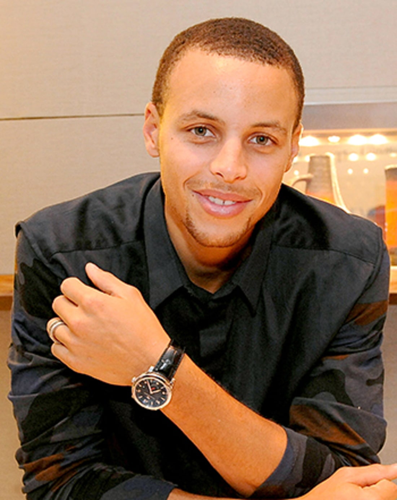

Contact Details
Email: curry@mit.edu
Phone: (703) 267-4620
Coach Curry
Coach Curry enters his first season as the head coach of the MIT soccer team in 2015 after spending the past two years as an assistant coach.
Curry brings 25 years of proven success as a coach at many levels to the Engineers. He was born in, and grew up playing soccer in Trinidad. Upon coming to the United States, he played soccer at Boston College and was a semi-professional player in the L.A.S.A. League with the Lowell Blues from 1982-1985.